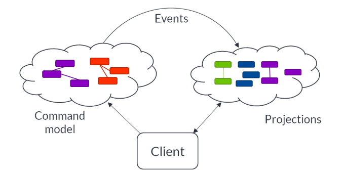

This presentation is about sharing insights, for a deepdive into Axon see the reference guide
Based on the principles of:
In addition, Axon supports Event Sourcing
Axon can be used in both:
Build a decent monolith first, that is hard enough
Allard Buijze (CTO & Founder of AxonIQ)
Furthermore AxonIQ states:
Execution of a command should be segregated from queries returning state:
Enables supporting different non-functional requirements for reads and writes
Very well described by Eric Evans in his book Domain Driven Design - Tackling Complexity in the Heart of Software, strongly recommended for any developer or architect.
Component based development requires identification of bounded contexts
Axon makes intensive use of the concept of Aggregates: a set of entities that work together, always consistent - a transactional consistency boundary
Events are not enough, Commands and Queries are also essential, better name would be Message-Driven Architecture
Axon provides Location Transparency by using explicit messaging for Commands, Events and Queries
Asynchronous (where applicable) and loose coupling (where applicable)
The state of a business entity is persisted as a time-ordered sequence of events
| Feature | Dagobert requirement |
|---|---|
| Location transparency: potential requirement for separately deployable units (microservices) | Yes |
| Support for separate non-functional requirements for reads and writes | No |
| Feature | Dagobert requirement |
|---|---|
| Naturalized audit trail | All Kafka events already need to be stored for idempotency. User actions are too limited too warrant Event Sourcing |
| Analytics | No |
| Design flexibility in business logic and views | Not really |
| Temporal reports | No |
Architect designed 6 separately deployable components
Using Axon this decision could be postponed
Currently one deployable component is still sufficient, saving lots of overhead in development
Axon does not provide support for idempotency out of the box
Idempotency would be needed at each place of decoupling
For Dagobert it was decided to make each end to end process single-threaded and one database transaction
That way the effort to implement and test idempotency can be postponed until a need for separate deployment of a component
Axon does not provide out of the box support for creation of a non-random aggregate id
A non-random aggregate id is needed when an event (command) arrives from an external party that has no knowledge of the aggregate
For Dagobert we use name UUIDs:
Easy to add aggregates, because they are just serialized to the same table
But with Event Sourcing, changing aggregates means conversion of events, manipulating the serialized XML
Can only really be properly tested with an existing store with all versions of events
Using Event Sourcing, it is pretty easy to rewind time by just deleting the last events
Can be helpful in testing
Don't make components too small i.e. don't try to decouple everything
But at the same time don't make the components too large...